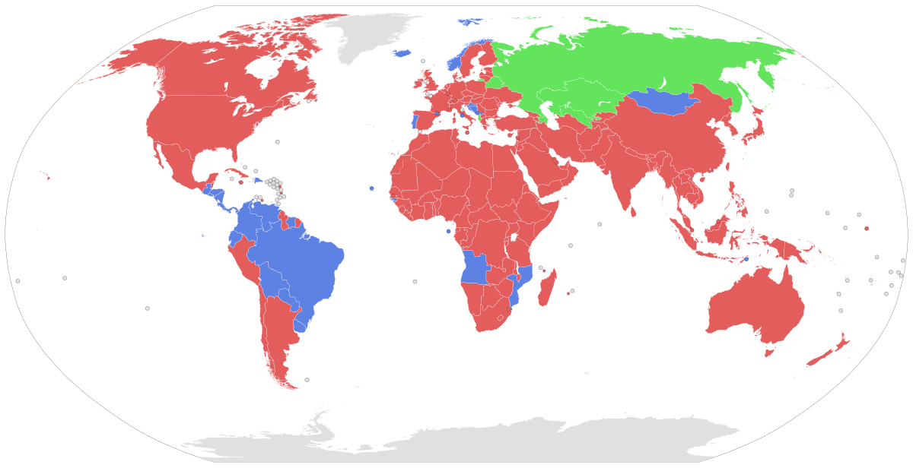

Pena de Morte
Pena de Morte no Brasil: Um Debate Controverso
A pena de morte, ou pena capital, é uma forma de punição aplicada pelo Estado para crimes considerados
gravíssimos, onde a sentença final é a execução do condenado. Historicamente, esse tipo de punição tem sido
utilizado em diversas sociedades como resposta a delitos como homicídio, traição ou crimes contra o
Estado.
No contexto brasileiro, a Constituição de 1988, em seu artigo 5º, estabelece que "não haverá penas de
morte, salvo em caso de guerra declarada", ou seja, atualmente, a pena de morte não é uma prática legal em
tempos de paz no Brasil, sendo permitida apenas em situações excepcionais de conflito bélico. No entanto, o
debate sobre a sua implementação volta e meia ressurge, principalmente em função do aumento da criminalidade
e dos altos índices de violência.

Métodos de Execução
Nos países onde a pena de morte ainda é aplicada, são utilizados diferentes métodos para a execução da
sentença. Entre os principais métodos estão:
→ Injeção letal: Considerado um dos métodos mais comuns e "humanitários", consiste na aplicação de
drogas que provocam a morte de forma aparentemente indolor.
→ Câmara de gás: O condenado é exposto a gases letais em um ambiente fechado, resultando em morte por
asfixia.
→ Execução por fuzilamento: Um pelotão de soldados dispara simultaneamente contra o condenado.
→ Eletrocussão (cadeira elétrica): Utilizada principalmente nos Estados Unidos, onde o prisioneiro é
submetido a uma descarga elétrica fatal.
→ Enforcamento: Método tradicional em que o condenado é suspenso por uma corda, levando à quebra do
pescoço ou sufocamento.
Prós e Contras da Pena de Morte
Prós:
→ Dissuasão: Os defensores da pena de morte acreditam que a ameaça de execução pode servir como um
forte fator dissuasivo para crimes graves, reduzindo a criminalidade.
→ Justiça para as vítimas: Para muitos, a pena de morte representa uma forma de justiça definitiva,
oferecendo um senso de fechamento para as famílias das vítimas.
→ Custo com encarceramento: Alguns argumentam que manter um prisioneiro em prisão perpétua é um custo
alto para o Estado, e a pena de morte poderia ser uma solução mais econômica.
Contras:
→ Irreversibilidade: A maior crítica à pena de morte é que, caso ocorra um erro judiciário, não há como
reverter a execução de um inocente.
→ Violações de Direitos Humanos: Organizações de direitos humanos consideram a pena de morte uma
prática cruel e desumana, violando o direito à vida.
→ Eficácia questionável: Estudos mostram que a pena de morte não necessariamente reduz as taxas de
criminalidade, o que põe em dúvida seu valor como medida preventiva.
→ Desigualdade no sistema judiciário: Em muitos países, a pena de morte é aplicada de forma
desproporcional contra minorias e pessoas de baixa renda, expondo desigualdades sistêmicas na justiça.
Países que ainda realizaram execuções em 2024
As 883 registradas em 2024 ocorreram em 20 países, comparado a 18 países em que houveram execuções em
anos anteriores.
Os 20 países são: Afeganistão, Bangladesh, Belarus, China, Egito, Irã, Iraque, Japão, Kuwait, Myanmar,
Coreia do Norte, Palestina, Arábia Saudita, Cingapura, Somália, Sudão do Sul, Síria, Estados Unidos, Vietnã,
Iêmen.

Caso de Wade Wilson
O assassino Wade Wilson, conhecido internacionalmente por ter o mesmo nome que o personagem Deadpool, foi
condenado a pena de morte no dia 27/08/2024. Ele está preso pelo assassinato de Kristine Melton, de 35
anos, e Diane Ruiz, de 43.
O julgamento pelos homicídios ocorreu em julho deste ano. No caso de ambas as mulheres, ele foi
declarado culpado. O primeiro assassinato aconteceu em 6 de outubro de 2019. Wilson conheceu Kristine em um
bar, e a acompanhou até sua casa em Cape Coral, na Flórida. Dentro da sua residência, a estrangulou enquanto
ela dormia, roubou seu carro e seguiu em busca de outra vítima.
Na mesma noite, com o veículo roubado, avistou Diane andando pela rua, e pediu orientações a ela. Ruiz
entrou no carro, e Wilson a estrangulou quando ela tentou sair. Em seguida, a atropelou várias vezes. As
duas mulheres não se conheciam.
O detento de 30 anos ficou estático durante a declaração da sua pena na terça-feira. Sua defesa
argumentou que ele sofre de problemas mentais e vício em drogas, mas o júri rejeitou a alegação. A maioria
votou pela pena de morte (nove de doze votos no caso de Melton, e dez de doze votos no caso de Ruiz). O
público reagiu com aplausos na sala.
O júri determinou que a pena de morte era necessária em função do aspecto hediondo do crime. Além disso,
Wilson já havia sido declarado culpado por outras atividades ilegais, incluindo enquanto estava na prisão.
Conforme alguns documentos judiciais, Wilson estaria ligado a uma gangue de supremacia branca.
O juiz Nicholas Thompson foi responsável pela palavra final da sentença. Respondendo ao pedido da
defesa que Wilson fosse punido com prisão perpétua, rejeitou os argumentos dos seus advogados. "Dados os
fatos do caso, nenhum aspecto da infância do réu ou do seu estado mental iria indicar que a pena de morte é
inapropriada", disse, antes de formalizar o pedido.
O assassino retornou ao tribunal no dia 16 de setembro para falar sobre as outras acusações pendentes
contra ele. Os processos devem ser finalizados antes que ele vá ao corredor da morte.
Caso de Troy Davis
O último caso marcante envolvendo a aplicação da pena capital ocorreu no dia 21 de setembro de 2011. Naquele
dia, às 23h08min, no horário de Nova Iorque (0h08min do dia seguinte no horário de Brasília), um homem negro
chamado Troy Davis foi executado nos EUA, através de injeção letal, por um crime em que sua autoria não foi
conclusivamente provada durante todo o processo judicial em que foi proferida sua sentença de morte.
Troy Davis foi acusado, processado, julgado e considerado culpado, por ter, supostamente, matado o policial
Mark McPhail, em 1989, no momento em que este ajudava um sem-teto que estava sendo atacado.
Ao longo dos anos em que Troy Davis permaneceu preso, aguardando sua execução, sua defesa demonstrou que
a arma utilizada no crime jamais foi encontrada. Somado a isso, as notícias dão conta que, das nove
testemunhas que ajudaram a condená-lo, sete voltaram atrás em seus depoimentos, afirmando que na época em
que os prestaram foram persuadidas pela polícia a testemunhar contra Troy, provavelmente em razão da pressão
corporativista da polícia e do desejo irracional de se encontrar um culpado, em nome da tão proclamada
segurança jurídica que, ao que parece, deve ser absoluta e inabalável em solo americano.
A defesa de Davis asseverou, ainda, que nenhuma evidência forense ou de DNA foi encontrada durante as
investigações. Uma testemunha chegou a afirmar que o verdadeiro assassino, de nome Sylvester Coles,
confessou o crime durante uma festa em que teria exagerado no consumo de bebida alcoólica, revelando a
informação. Ademais, outras dez testemunhas, que jamais foram ouvidas no processo, disseram que outro homem
admitiu ter atirado na vítima.
Nada obstante, ainda que Troy Davis estivesse protegido pelo manto da presunção de inocência, bem como
pelo benefício da dúvida (in dubio pro reo), ante a ausência de provas que o condenassem, ante as inúmeras
manifestações a seu favor ao redor do mundo; manifestações de peso, destaque-se, como a do Bispo Desmond
Tutu, do ex-presidente norte-americano Jimmy Carter, do Papa Bento XVI, da Anistia Internacional, enfim, de
uma verdadeira massa composta por personalidades notórias e cidadãos de todas as etnias, solidários a Troy
Davis, ainda assim sua execução foi levada a efeito.
Ultimos acontecimentos no mundo sobre
Trump endurece retórica e defende pena de morte para imigrantes que matem norte-americanos

O homem há 21 anos no corredor da morte que está prestes a ser executado por 'crime que não aconteceu'

Condenado a pena de morte nos EUA se declara à mãe antes de receber injeção letal: 'Tudo vai ficar bem. Eu te amo'
